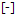

Interoperability with ETAS INCA
EHANDBOOK-NAVIGATOR has the capability to establish a connection with an INCA experiment and provides a closer link between models representing the functions and, the measurement and calibration values obtained during the calibration procedure.
This feature provides an integrated view on the algorithm specifications of a function (ASCET block diagram model) and the values being measured in the INCA experiment. The values from a running INCA experiment for measurement variables and/or calibration parameters are displayed directly in the interactive model within the Model Viewer of the EHANDBOOK-NAVIGATOR. It is also possible to configure which of the measurement variables and/or calibration parameters, depicted in the interactive model, should display the values. Starting the visualization and stopping the measurement of an INCA experiment directly from the EHANDBOOK-NAVIGATOR is also supported.
This feature also provides support for different calibration tasks such as debugging of errors, checking plausibility of calibration data with respect to the algorithmic specification etc.
|
If you are using EHANDBOOK-NAVIGATOR in Basic Mode, connectivity for INCA is not supported. |
Compatibility of EHANDBOOK-NAVIGATOR with INCA:
The following table shows the compatibility details of connecting EHANDBOOK-NAVIGATOR
to INCA.
| EHANDBOOK-NAVIGATOR | ||||
|---|---|---|---|---|
|
|
|
||
|
|
Yes |
Yes |
Yes |
|
Yes |
Yes |
Yes |
|
NOTICE
The EHANDBOOK-NAVIGATOR may display erroneous values in an interactive
model when the real time data will be retrieved from an INCA experiment!
Affected values of the interactive model can be displayed erroneous in the
EHANDBOOK-NAVIGATOR when the content of the A2L file (*.a2l) and the
HEX file (*.hex) used in the INCA experiment do not match to the content of
the files used in the container. The following real time values can be affected:
-
measuring variables
-
calibration parameters
-
system constants
Therefore, always check the conformity of the A2L-file and the HEX-file used in the container and in the INCA experiment (e.g. with the checksum) before you start working.
Connecting to INCA Experiment
Connecting to an INCA experiment is the first step in establishing a link with an INCA experiment and acquiring values for measurement variables and calibration parameters from the experiment.
Prerequisites
Prior to connect the EHANDBOOK-NAVIGATOR to an INCA experiment, you must first:
-
Start ETAS INCA
-
Select an active workspace
-
Start an INCA experiment
-
Open an interactive model in the Model Viewer
-
Enable the Measurement of Calibrations if you want to add the calibration values. Refer to Enable the Measurement of Calibration values below.
Enable the Measurement of Calibration values
It is necessary to make the settings manually before connecting to INCA if you want to visualize the calibration values. If it is set to "No", then you will not be able to add values.
|
Changing the user settings on the "Experiment" tab does not affect on the already opened experiment. It is necessary to make the settings and reopen the experiment again. If you just reconnect, it is not possible to visualize the calibration values for the experiment which was opened earlier. |
To perform the settings in INCA:
-
Go to
Optionsmenu and clickUser Optionsin INCA. -
Switch to the tab
Experiment → General. -
Set the value to "Yes" on the "Enable Measurement of Calibrations" option.
-
Close and reopen the INCA experiment.
With INCA V7.4.7 a new user option for the rendering of indexed variables was introduced.
It controls whether an indexed variable name contains an underscore character in front of the index or not,
e.g. indexedVariable_[0] or indexedVariable[0].
On connecting EHANDBOOK-NAVIGATOR to INCA the new user option is automatically queried
and used for the correct naming schema. No manual interaction is required.
Observe your current user option settings in INCA here:
Previous versions of INCA not having this user option will be treated as having the underscore being applied.
|
It is your responsibility to set up a suitable INCA workspace and experiment. EHANDBOOK-NAVIGATOR establishes a connection to the selected workspace and experiment. |
|
A single connection established with INCA is applicable for all the interactive models displayed in multiple Model Viewers. |
|
EHANDBOOK-NAVIGATOR running in Basic Mode does not support connectivity for INCA. |
To connect to an INCA experiment:
-
Go to
Datamenu and selectINCA Experiment (Live).
<Or>
-
Select
INCA Experiment (Live)in theData Sourcedrop-down menu on the status bar.
INCA Experiment (Live) dialog box is displayed with appropriate information. If
all the above Prerequisites are satisfied, then the image which is
shown below is displayed. Then the connection is established with INCA. If the
connection is not established, an error message(s) with appropriate instructions
are shown.
-
Checkbox for comparison of case sensitive label name
-
Checkbox for displaying existing variables values
If an INCA experiment has few thousands of labels, the model navigation (incase
of deeply nested hierarchy) is faster if the check box is checked. It will be much
slower for the same model, if the checkbox is unselected.
If the “Read only mode" checkbox is checked then only those variable values configured
in the connected INCA experiment are displayed. In case the variable is
indexed then only those indices will be used.
If the "Read only mode" checkbox is unchecked, all variable values are displayed
and also allows to add new variable(s) to the INCA experiment. If there are indices
available already in the INCA experiment then those indices are used. In case the
variable is not available, then the associated variable gets added with zero index
("_[0]") as default. The indexed labels are displayed as a table as shown below.

-
Click Connect to connect with INCA.
|
If you are using EHANDBOOK-NAVIGATOR in Basic Mode, connectivity for INCA is not supported. |
|
The calibration values will be displayed in the read-only mode only when INCA 7.3.6 or newer versions is connected. |
Configuring Model Blocks to Show/Hide Values
Before starting the visualization of measurement variables and calibration parameters, the model blocks representing measurement variables and calibration parameters must be configured to show/hide values. You have the option of configuring a single block at a time or configuring all the blocks that are visible in the interactive model, displayed in the Model Viewer. The model blocks must be configured only after a connection has been established with an INCA experiment.
On configuring the model blocks, EHANDBOOK-NAVIGATOR interacts with the INCA experiment and identifies for which blocks, the values can be displayed. If values can be displayed for a block, '-' is displayed below the block and a value is displayed in the brackets after starting the visualization.
|
To display values of measurement variables and/or calibration parameters, EHANDBOOK-NAVIGATOR automatically adds instruments to the active layer in the INCA experiment. You have to create and/or select a layer in the INCA experiment to which the instruments shall be added. |
|
When EHANDBOOK-NAVIGATOR adds instruments to a layer, measurement variables are added to the pre-configured default measurement raster. The default measurement raster has to be pre-configured in the A2L file. |
|
Once the visualization has been started, then it is possible to add values as the application automatically stops the experiment at the values and starts the experiment again. |
|
It is possible to configure model blocks only after you have connected EHANDBOOK-NAVIGATOR with an INCA experiment. |
|
If you are using EHANDBOOK-NAVIGATOR in Basic Mode, connectivity for INCA is not supported. |
To configure a single measurement variable or calibration parameter to show/hide value:
-
Right-click on the measurement variable or calibration parameter block you want to configure.
A context menu is displayed. -
Select
Display Valueto configure the block to display the value of the measurement variable or calibration parameter.
<Or> -
Select
Hide Valueto configure the block to hide the value of the measurement variable or calibration parameter.
To configure all the blocks, visible in the interactive model displayed in the Model Viewer, to show values:
-
Click
Display all valuesin the Status bar.
<Or> -
Go to
Datamenu, selectDisplay all Values.
<Or> -
Press <CTRL+SHIFT+D>.
To configure all the blocks, visible in the interactive model displayed in the Model Viewer, to hide values:
-
Click
Hide all valuesin the Status bar.
<Or> -
Go to
Datamenu, selectHide all Values.
<Or> -
Press <CTRL+SHIFT+H>.
Starting the Visualization
-
Start Visualization feature in Data Menu
-
Start Visualization button in the Status bar
Starting the visualization and stopping the measurement of an INCA experiment using EHANDBOOK-NAVIGATOR is supported. Model blocks must be configured before starting the visualization.
|
If you are using EHANDBOOK-NAVIGATOR in Basic Mode, connectivity for INCA is not supported. |
To start the visualization:
-
Click
Start Visualization(2) in the Status bar.
<Or> -
In the
Datamenu, selectStart Visualization.
<Or> -
Press
F11. Visualization of the connected INCA experiment is started and values for the configured blocks are being displayed and periodically updated.
|
Values for measurement variables are updated at a different rate in EHANDBOOK-NAVIGATOR when compared to the INCA experiment. The update rate allows identification of changes in values over a period of time. Values are not updated in real-time and might not reflect the actual value at a certain point in time. |
|
If you configure blocks of interactive models in multiple Model Viewers, visualization of values occurs simultaneously in all the loaded interactive models. |
Stopping the Measurement
-
Stop Measurement in Data Menu
-
Stop Measurement button in the Status bar
It is possible to stop the measurement of the INCA experiment only if the visualization has started.
To stop the measurement:
-
Click
Stop Measurement(2) in the Status bar.
<Or> -
In the Data menu, select
Stop Measurement(1).
<Or> -
Press F9. The latest values measured in the INCA experiment is displayed in the Model Viewer.
|
If a recording is additionally running in the connected INCA experiment, you receive a notification to proceed or stop the running experiment and measurement. |
Live Visualization of Output Values for Maps and Curves
EHANDBOOK-NAVIGATOR supports live visualization of output values for maps and curves from a connected INCA experiment. Before starting the visualization of measurement variables and calibration parameters, the default measurement raster has to be preconfigured in the A2L file.
Before starting the visualization of measurement variables and calibration parameters, the model blocks representing measurement variables and calibration parameters must be configured to Display/Hide values. The model blocks must be configured only after a connection has been established with an INCA experiment
EHANDBOOK-NAVIGATOR supports displaying of values in decimal points also.
The value format of a label displayed in the EHANDBOOK-NAVIGATOR from a connected
INCA experiment comprises of the following criteria:
-
If a COMPU_METHOD is defined for a label then the format which is defined in the compuMethod will be applied.
-
If a COMPU_METHOD is not available, then INCA by default defines two decimal places for the label and passes it to EHANDBOOK-NAVIGATOR.
-
Rounding off the decimal values happens at the last digit after the decimal point. The values are Round up or Round down based on the value of the last digit. For example, 6.737 is rounded up to 6.74 and value 6.734 is rounded down to 6.73.
There are chances that the output data may not be displayed, if input data is not specified or if there is some issue with the INCA experiment. If no output value is displayed for a map or curve, please check the input data and also check the INCA experiment.
|
Values for measurement variables are updated at a different rate in EHANDBOOK-NAVIGATOR when compared to the INCA experiment. The update rate allows identification of changes in values over a period of time. Values are not updated in real-time and might not reflect the actual value at a certain point in time. |
Adding Labels when Hardware Device is Inactive
EHANDBOOK-NAVIGATOR allows you to add the labels to an interactive model even if no hardware is connected to INCA.
You can load an Experiment in your system and make sure that workspace is active. After making the connection, you can add a valid label which is just below the label in the interactive model of an EHANDBOOK-NAVIGATOR. This valid label which is known to INCA and that can be added to the interactive model in the Experiment.
It helps you to prepare the initial setup at your desk even if no hardware is connected to INCA. At the later stage, once the setup is ready, then you can connect your system to hardware device when it is available, and execute the experiments.
To add the labels, follow the steps below:
-
Click
Connect to INCA Experimentin the Connectivity View.
<Or> -
In the
Connectivitymenu, selectConnect to INCA Experiment. Refer to Connecting to INCA Experiment for more details. -
Open an Interactive model, select the label which you want to add it for experimentation ( Refer to Configuring Model Blocks to Show/Hide Values for more details on configuring the values), and rightclick.
A context menu is displayed. -
Click
Display Value.
A valid label which is known to INCA is marked with  just below the label.
It is important that you can start the experiment only with the proper hardware
device is connected.
As soon as you connect the hardware to INCA and start the experiment,
EHANDBOOK-NAVIGATOR checks the active device and executes the experiment.
|
A new variable when added via the |
Stopping the Running INCA Experiment
It is possible to disconnect from an INCA experiment to which EHANDBOOK-NAVIGATOR has already established a connection.
To stop the running INCA experiment:
-
Go to
Datamenu and selectNone.
<Or> -
Select
Nonein theData Sourcedrop-down menu on the Status bar.
When the other data source is connected in EHANDBOOK, the connection with INCA as well as the labels which were already added will be removed.